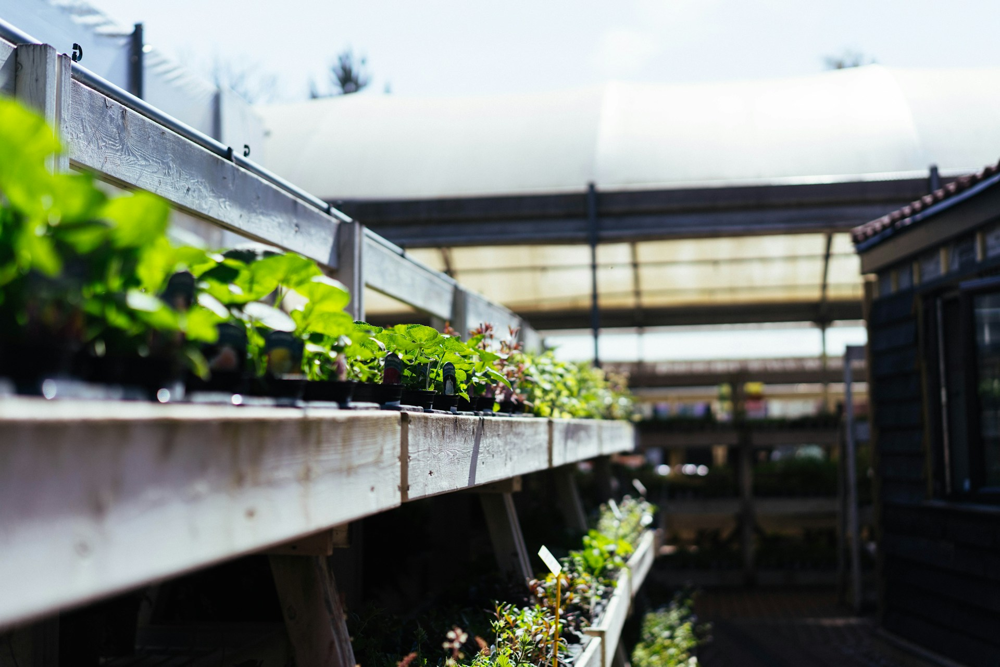
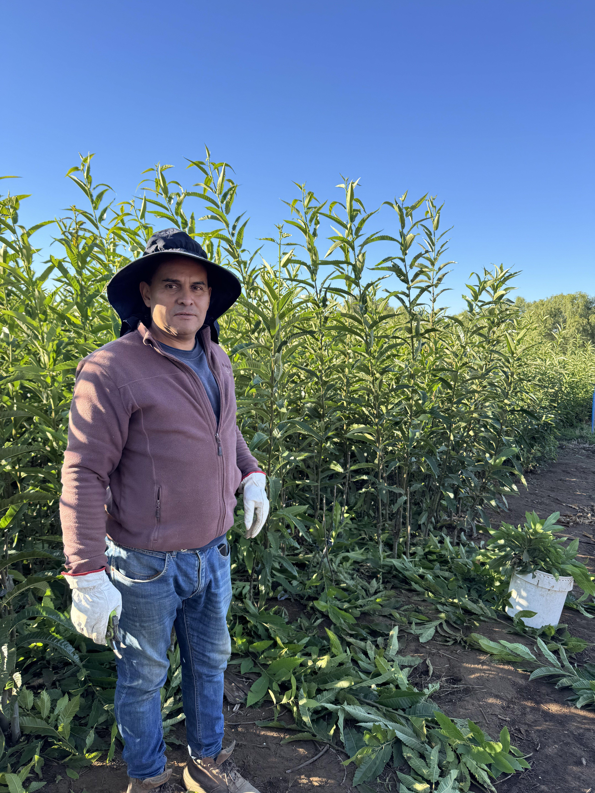
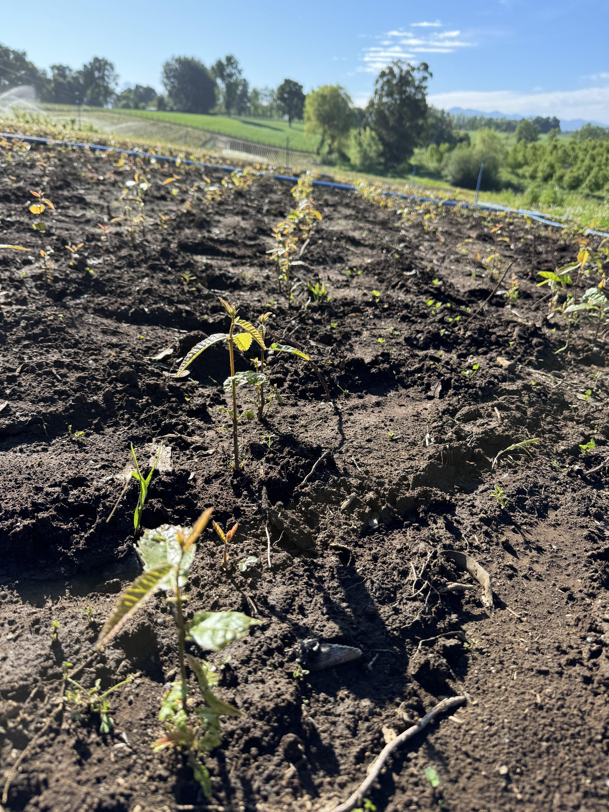
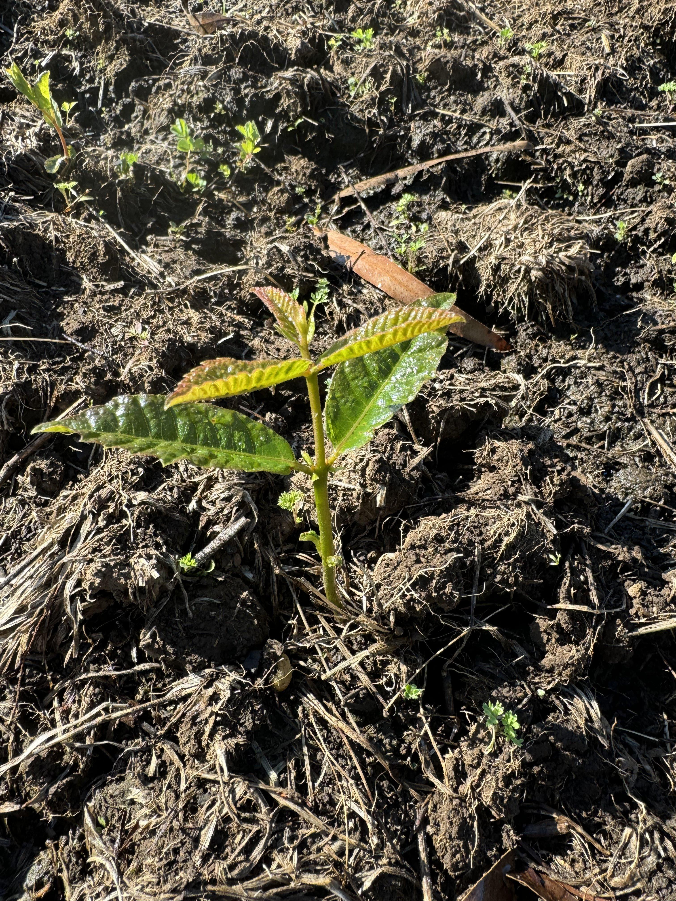
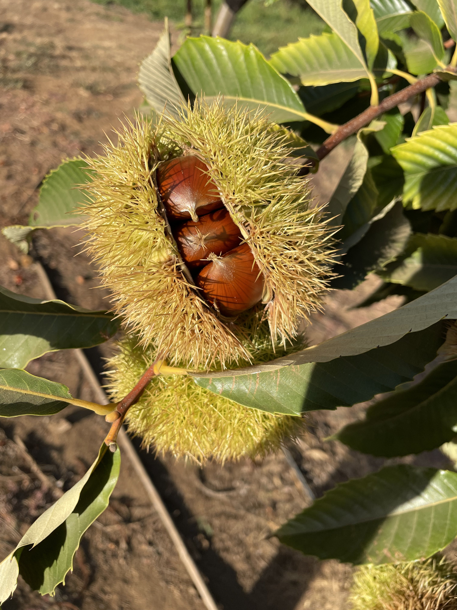

Mi Cosecha
En Mi Cosecha reunimos de forma sencilla la información que interesa al productor: calendario de campo, cuidados básicos del castañar y referencias sobre calidad del fruto. Es un espacio pensado para quien ya plantó o está valorando ampliar superficie, con un lenguaje claro y contenidos genéricos que puedes adaptar a tu comarca y a tu variedad.
El castañar combina trabajo en vivero, plantación y años de paisaje forestal hasta la recogida. Las fotografías de esta página son nuevas imágenes de referencia (vivero, paisaje y ciclo del fruto) obtenidas de bancos de fotos libres, para ilustrar el discurso sin sustituir el material propio de tu explotación.







Si necesitas un plan de plantación, calendario fitosanitario o estimación de producción, el equipo de marronesdelsur puede ayudarte a bajar esta información genérica a tu parcela concreta.